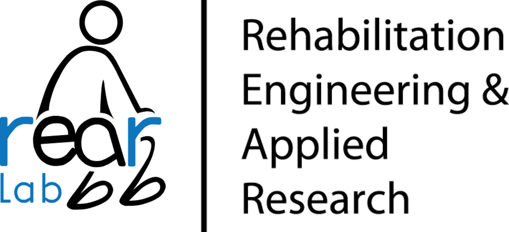

Rehabilitation Engineering
Worked in the Rehabilitation Engineering & Applied Research (REAR) lab as a part of the Summer Undergraduate Research Program at Georgia Tech


Using Large Language Models to Evaluate Technology for People with Disabilities


-
Worked with Keplo, a web-based application that analyzes customer reviews to develop product insights
-
Prompt Engineering to understand how to construct prompts that recommend valuable products for people with disabilities
-
Presented research findings at Georgia Tech symposium
-
Currently working on publishing a paper on this research

Dog Treat Dispenser for Powered Wheelchair Users
-
Designed the mounting system to fit most to all varieties of powered wheelchairs. Implemented a dovetail joint between the mount and the device
-
Low volume product so designed with low manufacturing cost and complexity in mind
-
Topology optimization tools to design for strength while minimizing weight
-
Gravity-fed hopper meant to be activated with little force